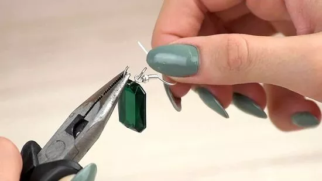
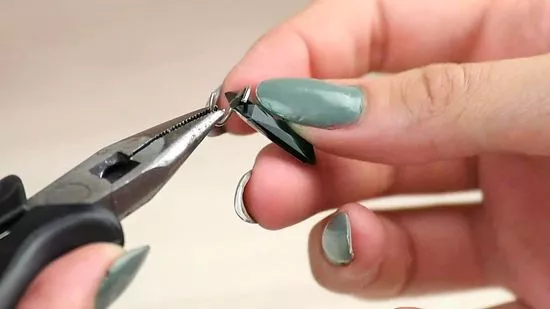

|  |
step 1 :
Try making Swarovski crystal earrings. These earrings are fairly simple to make, and only require two crystals for your charms, two jump rings, and two earring findings. You will also need a set of pliers to help open and close the jewelry pieces.
|
|  |
step 2 :
Add the crystals to the jump rings. Use your pliers to twist and open up the two jump rings. Feed the crystals onto the jump rings through the holes in the charms.
Be sure that if you crystals have a distinct front and back side, that the front side will be showing forward once you close the jump ring and put on the earring. If not, you can always reopen the jump ring and turn the crystal around on the ring.
|
 |
step 3 :
Add the earring finds to the jump rings. Once the crystals are on the jump rings, slide the earring findings onto the jump rings. You should be able to hold a jump ring and have both the crystal and earring finding hanging off. Use your pliers to close and secure the jump rings.
This earring project can take less than five minutes, and at the end, you have a unique pair of beautiful earrings.
|